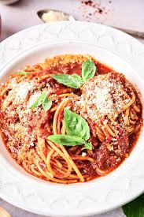

Spaghetti Marinara

Description
Marinara is a delicious and simple classic Italian staple sauce. Paired best with the long noodle spaghetti, this dish is an easy meal to eat on its own or as a side dish.
Prep time: 10-15 minutes.
Ingredients
- 1 can of tomatoes
- 2-3 tbsp. extra virgin olive oil
- 1-2 cloves of garlic
- Pinch of dry crushed red peppers
- Pinch of salt
- 1/3 cup freshly grated Parmigiano Reggiano
- 1/3 cup chopped fresh basil
- 1 pound dry spaghetti
Steps
- In a medium large pot, set water to boil. Add a few pinches of salt to boiling water
- Once water is to a rolling boil, add dry spaghetti
- In a seperate sauce pan, add olive oil and set to medium heat
- Finely chop cloves of garlic. Once chopped, add garlic to oil in sauce pan.
- Season garlic and oil with salt and crushed red pepper flakes
- After a few minutes of frying the garlic, add can of tomatoes to sauce pan
- Once spaghetti is AL DENTE, drain boiling water. Save one cup of the pasta water before draining it all.
- Add al dente spaghetti to the sauce pan with the marinara sauce, and stir the sauce and noodles to incorporate, adding grated parigiano and pasta water to create a thicker consistency.
- Once the desired consistency is acheived, plate spaghetti with freshly grated parmigiano and fresch cut basil on top
Home